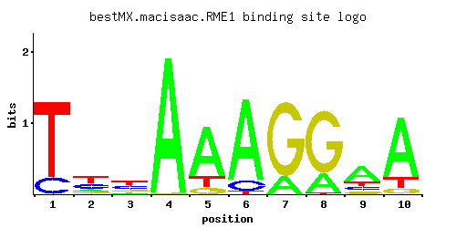

RME1
YGR044C, CSP1
Zinc finger protein involved in control of meiosis; prevents meiosis by repressing IME1 expression and promotes mitosis by activating CLN2 expression; directly repressed by a1-alpha2 regulator; mediates cell type control of sporulation
Best-performing DNA-binding model.

View and copy the recommended matrices ↘
A | 0.001 0.121 0.119 0.989 0.743 0.860 0.187 0.227 0.580 0.790 C | 0.180 0.324 0.338 0.001 0.001 0.107 0.001 0.001 0.141 0.002 G | 0.003 0.120 0.171 0.009 0.100 0.001 0.811 0.763 0.126 0.075 T | 0.816 0.436 0.371 0.001 0.156 0.032 0.001 0.009 0.153 0.133
A | 0 12 11 98 74 86 18 22 57 79 C | 18 32 33 0 0 10 0 0 14 0 G | 0 12 17 0 10 0 81 76 12 7 T | 81 43 37 0 15 3 0 0 15 13
A | -5.77 -0.97 -0.99 1.13 0.84 0.99 -0.54 -0.34 0.59 0.90 C | 0.00 0.59 0.63 -5.19 -5.19 -0.52 -5.19 -5.19 -0.24 -4.50 G | -4.09 -0.41 -0.05 -3.00 -0.59 -5.19 1.51 1.44 -0.36 -0.88 T | 0.94 0.31 0.15 -5.77 -0.72 -2.30 -5.77 -3.57 -0.74 -0.88
Alternative candidate matrices 1
Historical matrix candidates from the original ScerTF database. Expand a source to inspect its original logo, scores, and matrix values.
RME1Foat et. al.P = 0.0009001View matrix ↘
Gene-level annotations and interactions.
Genes bound in ChIP-chip experiments 107 genes
YAL004W, YBL001C, YBL002W, YBL003C, YBL025W, YBL074C, YBR216C, YBR217W, YDL130W, YDL184C, YDR042C, YDR048C, YDR210W-D, YDR526C, YEL012W, YER078C, YER079W, YER177W, YER189W, YER190W, YFL034W, YFR017C, YGL050W, YGL134W, YGL135W, YGL136C, YGL190C, YGL234W, YGL236C, YGR030C, YGR031W, YGR060W, YGR109C, YGR109W-A, YGR109W-B, YGR256W, YHL034C, YHR143W, YIL014W, YIL015C-A, YIL050W, YIL051C, YIL052C, YIL158W, YIL161W, YIL169C, YJL045W, YJL148W, YJL188C, YJL189W, YJL190C, YJL191W, YJL192C, YJR100C, YKL042W, YKL118W, YKL132C, YKR062W, YLL063C, YLR027C, YLR029C, YLR030W, YLR061W, YLR065C, YLR066W, YLR074C, YLR075W, YLR105C, YLR367W, YLR368W, YLR369W, YLR439W, YML055W, YML056C, YML100W, YML101C, YML102C-A, YML125C, YML131W, YMR013C, YMR014W, YMR052C-A, YMR053C, YMR054W, YMR144W, YMR165C, YMR261C, YMR262W, YNL032W, YNL034W, YNL250W, YNL251C, YNR018W, YNR044W, YOL154W, YOR042W, YOR138C, YOR140W, YOR236W, YOR369C, YPL090C, YPL130W, YPL141C, YPL143W, YPL198W, YPR109W, YPR161C
Genes affected by TF deletion 39 genes
YLR216C, YOR037W, YAR068W, YMR314W, YBR093C, YBR097W, YBR129C, YIL124W, YNL281W, YGL180W, YMR017W, YER001W, YOR074C, YOL150C, YOR298W, YHR214W, YOR298C-A, YBR296C, YHR214W-A, YOR136W, YKR028W, YPL256C, YGL055W, YKR086W, YLR294C, YDR209C, YBR079C, YGR044C, YOL151W, YOL155C, YOR027W, YGL255W, YIL169C, YLR269C, YBR244W, YMR306W, YNL200C, YNL007C, YPR176C
Genes supported by both experiments 1 genes
YIL169C